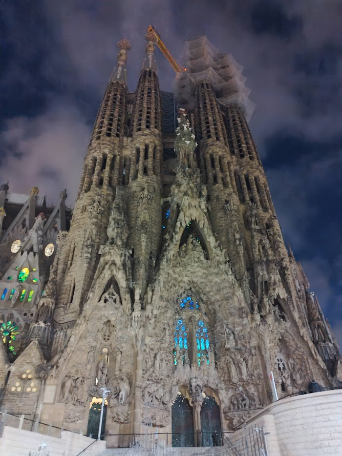
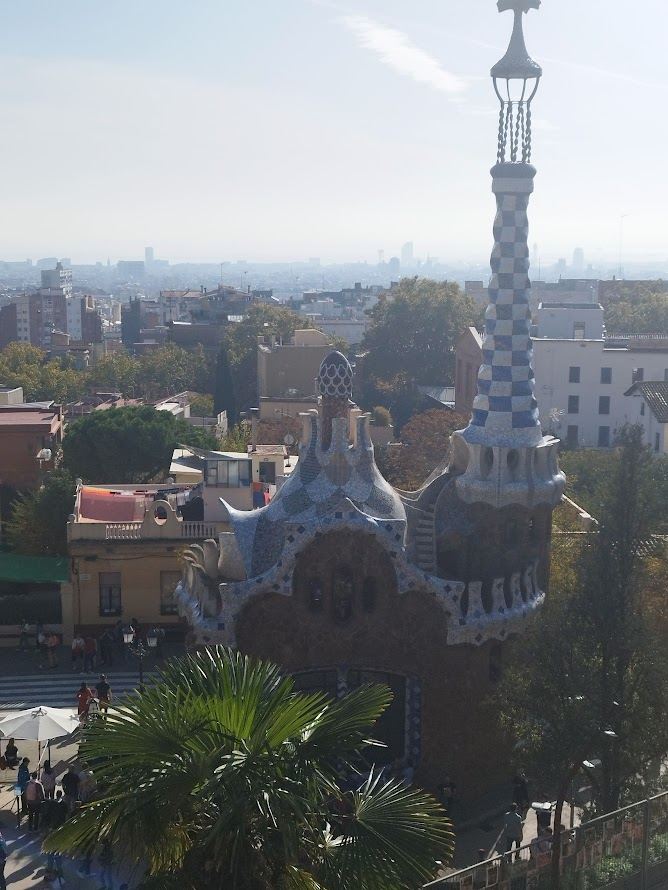
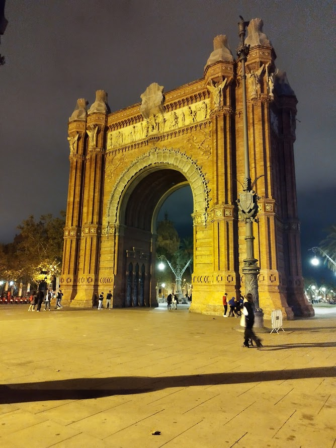

In Barcelona we visited two of Antoni Gaudi's most famous buildings. We also visited the Arc of Triomf

Fig. 1 - One of the side entrances of the Sagrada Familia, this one is the one designed and executed by Antoni Gaudi. The main entrance is yet to be built.

Fig. 2 - This is one of Park Guell's buildings, currently serving as a gift shop on the bottom floor.

Fig. 3 - Arc of Triomf.